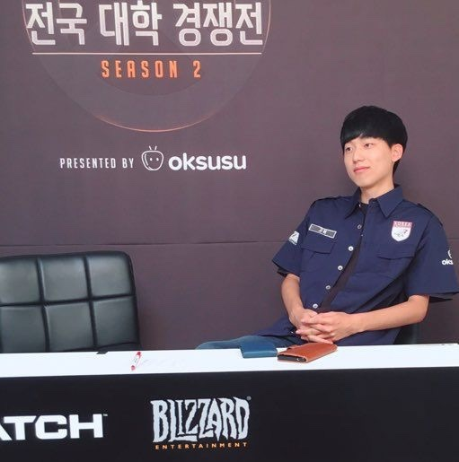
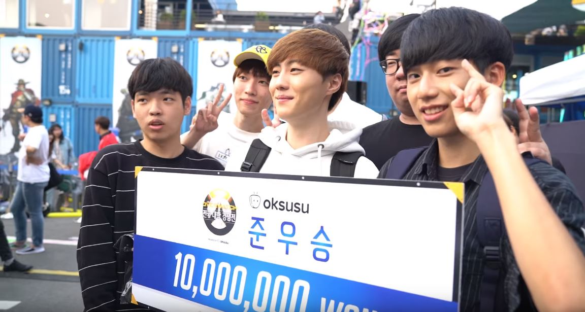

[공유] 오버워치, 'oksusu' 전국 대학 경쟁전 시즌 2 결승전 24일 개최
 블리자드 엔터테인먼트는 자사의 팀 기반 슈팅 게임, 오버워치의 대학생 아마추어 대회인 'oksusu와 함께하는 오버워치 전국 대학 경쟁전 시즌 2' 결승전이 서울시 광진구에 위치한 컨테이너 마켓 커먼그라운드에서 9월 24일(일) 오후 2시부터 개최, 다양한 온라인 플랫폼을 통해 생방송된다고 밝혔다. 총상금 4,000만 원 규모로 1,400만 원의 우승 상금과 대학생 최강의 오버워치 플레이어라는 명예를 얻기 위해 모든 참가팀이 치열한 경기를 펼친 이번 대회는 지난 8월 26일(토) 익산, 광주 지역 오프라인 예선을 시작으로 약 한 달 동안 많은 대학생들의 오버워치에 대한 열정과 패기 속에 진행, 전 시즌 준우승팀인 동의대학교 '타키온'과 오버워치 프로게임단 LW 레드 출신의 프로게이머 이호정 선수가 속한 고려대학교 ‘고머’의 최종 승부로 그 대단원의 막을 내리게 된다. 특히나 이번 대회는 전 시즌 준우승 팀인 동의대학교 타키온이 4강에서 전 시즌 우승팀인 전남과학대학교 '시티유파토스'를 만나 복수에 성공하여 결승에 진출한 가운데, 프로게이머 출신의 선수가 있어 예선부터 큰 화제가 된 고려대학교 고머가 환상의 호흡을 자랑하며 결승전에 진출하게 되어 그 결과에 대한 관심을 배가시키고 있다. 결승전 현장 관람은 무료이며 현장을 찾은 선착순 1,000명에게는 한정판 '오버워치 겐지 마우스 패드'가 증정되는 것은 물론, 별도의 현장 이벤트를 통해 플레이스테이션 4, 오버워치 리퍼 스태츄, 키보드, 마우스, 헤드셋 등 다양한 상품이 주어져 관객들에게 경기를 보는 재미 이외에도 다채로운 즐거움을 제공할 예정이다. 또한 이번 결승전은 SK브로드밴드의 모바일 동영상 서비스 'oksusu 앱'의 VOD와 홈페이지에서 박상현 캐스터, 김동수, 'RUNNER' 윤대훈, 온상민 해설의 유려한 입담과 함께 실시간으로 볼 수 있으며, oksusu 앱을 통해 이미 진행된 대학 경쟁전의 전 경기 다시 보기와 하이라이트 시청도 가능하다.
박범 기자 (Nswer@inven.co.kr)
News LinkYoutube Link
[공유] ‘물어보살’, ‘코로나·마스크 알리미’ 개발자 고민 의뢰

코로나 관련 사연이 ‘무엇이든 물어보살’을 찾아온다. 코로나 마스크 알리미 앱(애플리케이션) 개발자들이 보살들에게 고민을 의뢰한 것. 오늘(23일) 방송될 KBS Joy 예능프로그램 ‘무엇이든 물어보살’ 에서는 코로나 알리미와 마스크 알리미를 개발ㆍ운영 중인 고려대학교 학생들이 출연한다. 아기동자 이수근과 선녀 보살 서장훈은 이날 의뢰인이 코로나 마스크 알리미를 개발해 마스크 대란 사태에 도움을 준 학생들이라는 사실을 알자 “진짜 훌륭하다, 정말 좋은 일 한다”라고 감탄하면서 “자손 대대로 잘 될 것”이라며 온갖 복을 빌어준다. 하지만 이내 보살들은 얼굴이 좋지 않은 의뢰인을 걱정할 수밖에 없었다고. 의뢰인들은 한창 바쁠 땐 밤을 새우는 것은 물론, 접속자가 많아지면서 서버 비용만 몇 천만 원이 들어간다고 밝힌다. 광고를 받아보기도 했다던 의뢰인들은 생각지도 못한 내용이 올라오는 바람에 급하게 광고를 포기해야 했던 사연도 전한다. 현재는 천재 프로그래머이자 지숙의 남자친구로 알려진 이두희 대표가 서버 비용 전액을 지원하고 있다고. 이에 이수근은 “너희들의 순수함이 왜곡되고 상업적이라고 오해를 받았구나”라며 안타까워하면서, 다만 의뢰인들이 미안해하는 이두희 대표에게는 “이미 복받은 사람”이라고 정리해 현장을 폭소케 했다는 후문이다. 여기에 서장훈은 코로나와 관련해서 폭풍 질문을 쏟아낸다고. 평소 코로나 예방에 심혈을 기울이고 있는 아기동자 이수근과 선녀 보살 서장훈이 코로나 마스크 알리미 운영자와 어떤 이야기를 나눴을지 오늘(23일) 밤 8시 30분에 공개된다. 사진=KBS Joy ‘무엇이든 물어보살’ 제공
[출처] - 국민일보
김기호 hoya71@kmib.co.kr
News LinkYoutube Link